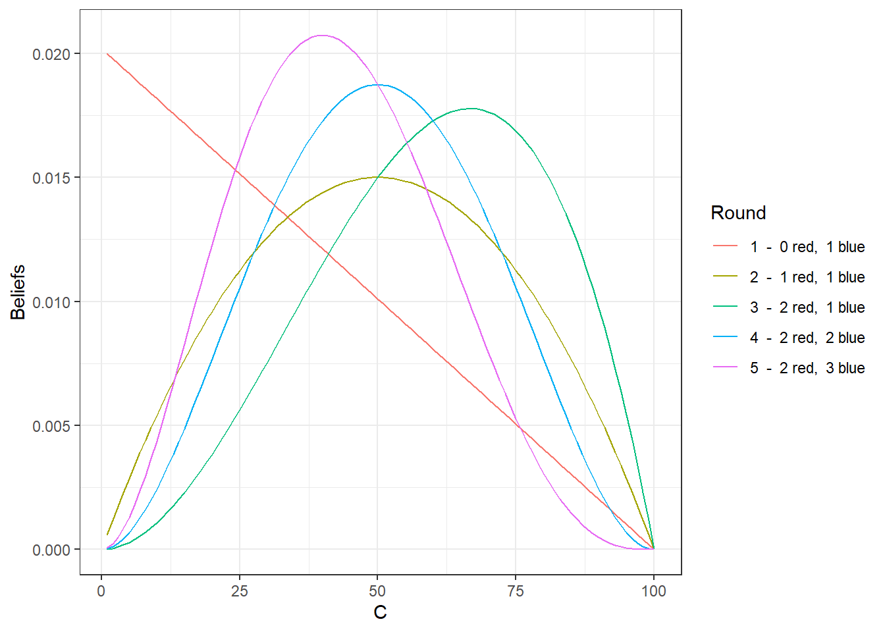
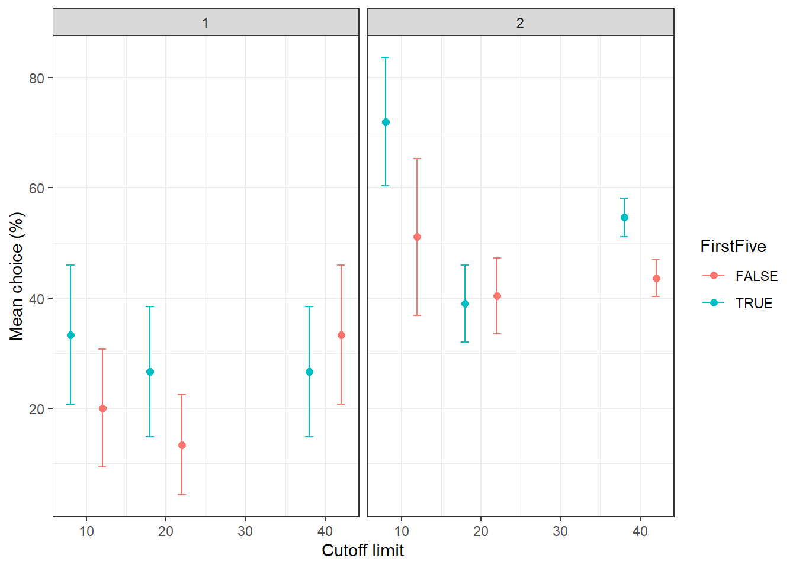
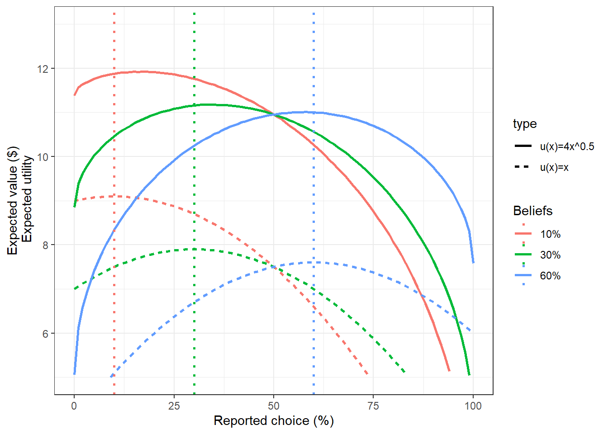
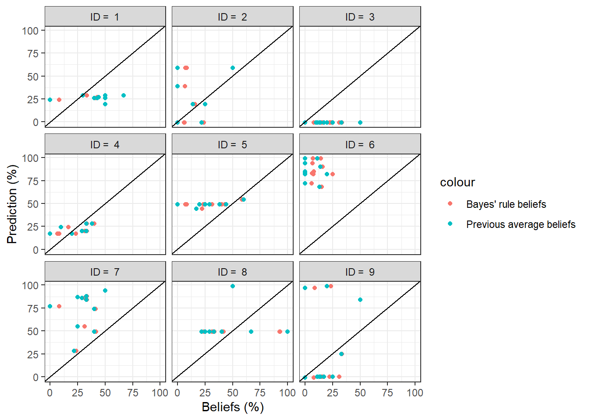

13 Bayes’ rule
13.1 Instructions
Part 1
- Random Events: In this experiment, you will observe a series of random events, which will be called Red or Blue.
- Decisions: Prior to the random determination of each event, you will be asked to predict the event, Red or Blue.
- Earnings: In each round you will receive a payoff that depends on whether or not your prediction is correct (details to follow).
- Total Earnings: All earnings from your forecast outcomes will be added to the total from previous rounds. The program will keep track of your total earnings.
- Determination of Events: The computer program will use random numbers to determine the sequence of events, as explained next.
- Event Determination: At the beginning of each round, a random number between (and including) 1 and 100 will be determined by the computer, with all integers in this range being equally likely. This random draw will be done independently for each person in each round.
- Cutoff Limit: If the random draw is less than or equal to a cutoff limit, then the event will be Red; otherwise the event will be Blue. Thus the cutoff limit determines the “chances in 100” that Red will occur.
- Different Cutoff Limits: Different people have been given different cutoff limits, so the chances in 100 of observing the Red event will be different for each person.
- Unchanging Cutoff Limits: You will not be told your cutoff limit, but it will not change from round to round, so by observing event outcomes in a series of rounds, you may learn more about the chances in 100 associated with the Red event.
- Independent Random Event Outcomes: Since your cutoff limit does not change, your chances in 100 of observing Red do not depend at all on whether or not the most recently observed event was Red or Blue.
- Example: Suppose that a person’s cutoff limit is 50 and the random number generated for that person for a particular round turns out to be 16. This number is below the cutoff of 50, so the event would be Red. Conversely, suppose that the random number for that person had been 88, which is above the cutoff, then the event would be Blue.
- Reminder: Your (undisclosed) cutoff will stay the same for all rounds, and different people will have different cutoff values. You will learn more about the chances in 100 for the Red event by observing a sequence of event outcomes.
- Earnings: After you make your prediction for a round, you will see whether your prediction was correct or not. If your prediction is correct, you will earn $0.20. If your prediction is not correct, you will earn $0.00.
Summary:
- Rounds: There will be a large number of rounds.
- In each round, you will make a forecast, Red or Blue.
- Then the program will use random numbers to determine the actual event, Red or Blue.
- You will recieve $0.20 if your forecast is correct and $0.00 if it is incorrect.
- Earnings in each round will be added to your previous total.
- We are ready to begin, please raise your hand if you have a question.
Part 2
- Random Events: In this experiment, you will observe a series of random events, which will be called Red or Blue.
- Decisions: Prior to the random determination of each event, you will be asked to assess the “chances in 100” that the event turns out to be Red.
- Earnings: In each round you will receive a payoff that depends on your assessment and the actual event observed (details to follow).
- Total Earnings: All earnings from your assessments will be added to the total from previous rounds. The program will keep track of your total earnings.
- Determination of Events: The computer program will use random numbers to determine the sequence of events, as explained next.
- Event Determination: At the beginning of each round, a random number between (and including) 1 and 100 will be determined by the computer, with all integers in this range being equally likely. This random draw will be done independently for each person in each round.
- Cutoff Limit: If the random draw is less than or equal to a cutoff limit, then the event will be Red; otherwise the event will be Blue. Thus the cutoff limit determines the “chances in 100” that Red will occur.
- Different Cutoff Limits: Different people have been given different cutoff limits, so the chances in 100 of observing the Red event will be different for each person.
- Unchanging Cutoff Limits: You will not be told your cutoff limit, but it will not change from round to round, so by observing event outcomes in a series of rounds, you may learn more about the chances in 100 associated with the Red event.
- Independent Random Event Outcomes: Since your cutoff limit does not change, your chances in 100 of observing Red do not depend at all on whether or not the most recently observed event was Red or Blue.
- Example: Suppose that a person’s cutoff limit is 50 and the random number generated for that person for a particular round turns out to be 16. This number is below the cutoff of 50, so the event would be Red. Conversely, suppose that the random number for that person had been 88, which is above the cutoff, then the event would be Blue.
- Please Note: Your cutoff will stay the same as it has been for the previous 20 rounds.
- When you have seen the results of previous rounds (if any), you must decide on the “chances out of 100” that the event is Red.
- A decision of 0 means that you think there is no chance that the event will be Red, a decision of 100 means that you are absolutely sure that event will be Red a decision of 50 means that you think it is equally likely that each event will be observed, etc.
- So choose a number above 50 if you think that it is more likely that the event will be Red, and choose a number below 50 if you think it is more likely that the event will be Blue.
- Your decision (reported chances in 100 for the Red event) must be an integer between 0 and 100. If you were to divide your decision by 100, the ratio can be thought of as a probability for the Red event. Your payoff will be a base amount $10.00 minus a penalty that depends on how much probability you assign to the event, Red or Blue, that is NOT observed. The formula is constructed to provide you with an incentive to report your true beliefs about the chances that the Red event will be observed. The exact formula doesn’t matter, since the calculations will be done for you, as explained on the next page.
- Payment Method: After you have submitted your “chances in 100” for event Red, you will be informed about which event was actually observed. You will earn more money to the extent to which your decision indicated higher chances in 100 for the event that turned out to be the one that occured. Your earnings for the round will be between a high payoff of $10.00 (if you indicate 100 chances in 100 for the observed event), and a low payoff of $0.00 (if you indicate 0 chances in 100 for the observed event.)
- Payoff Table: Please look at the payoff table below. The top row on the left side indicates that if you report 0 chances in 100 for Red, you will earn $0.00 if the event is Red and $10.00 if the event is Blue. Conversely, the bottom row on the right indicates that if your report 100 chances in 100 for the Red event, you will earn $10.00 if the event is Red and $0.00 if the event is Blue.
library(dplyr)
library(readxl)
library(kableExtra)
P2<-(read_excel("PS04Part2.xlsx")[,c(1,4,7)]
%>% data.frame()
)
colnames(P2)<-c("ReportedChoice","RedPayoff","BluePayoff")
kbl(head(P2)) %>% kable_styling(full_width = T)| ReportedChoice | RedPayoff | BluePayoff |
|---|---|---|
| 0 | 0.00 | 10.00 |
| 1 | 0.20 | 10.00 |
| 2 | 0.40 | 10.00 |
| 3 | 0.59 | 9.99 |
| 4 | 0.78 | 9.98 |
| 5 | 0.97 | 9.98 |
write.csv(P2,"PS04Part2Payoffs.csv")This table is also available to you in PS04Part2Payoffs.csv, so I have omitted a lot of it here
- Payoff Formula: The payoffs in the table are constructed by starting with a base amount $10.00 and subtracting a penalty that depends on how much probability you assign to the event, Red or Blue, that is NOT observed. (This penalty is 10 times the square of the probability assigned to the event that was NOT observed.) In any case, the calculations are done for you in the table.
13.2 Data Description
- In Part 1, “Prediction” is zero if that person predicted a blue event, and one if they predicted a red event
- “CutoffLimit” is the cutoff limit for each subject, determining the probability of a red event
- “PreviousAverage” is equal to the average number of red events a person saw in their previous rounds of that part. That is, they have seen (Round−1)(PreviousAverage) red events, and (Round−1)(1−PreviousAverage) blue events.
D<-(read_excel("2021PS04Bayes.xlsx", sheet = "Sheet1")
%>% data.frame()
%>% select(Round,ID,Actual.Prediction,Theoretical.Prediction,Previous.Avg.,Earnings)
%>% mutate(Actual.Prediction=Actual.Prediction-1)
%>% rename(Prediction = Actual.Prediction,
CutoffLimit = Theoretical.Prediction,
PreviousAverage = Previous.Avg.)
%>% mutate(PreviousAverage = as.numeric(PreviousAverage),
Part = ifelse(Round<=10,1,2),
Event = ifelse(Earnings==0.2,Prediction,1-Prediction))
)
kbl(D[1:15,]) %>% kable_styling(full_width = T)| Round | ID | Prediction | CutoffLimit | PreviousAverage | Earnings | Part | Event |
|---|---|---|---|---|---|---|---|
| 1 | 1 | 0 | 20 | NA | 0.2 | 1 | 0 |
| 1 | 2 | 0 | 40 | NA | 0.0 | 1 | 1 |
| 1 | 3 | 0 | 10 | NA | 0.2 | 1 | 0 |
| 1 | 4 | 0 | 20 | NA | 0.2 | 1 | 0 |
| 1 | 5 | 0 | 40 | NA | 0.2 | 1 | 0 |
| 1 | 6 | 0 | 10 | NA | 0.2 | 1 | 0 |
| 1 | 7 | 1 | 20 | NA | 0.2 | 1 | 1 |
| 1 | 8 | 1 | 40 | NA | 0.0 | 1 | 0 |
| 1 | 9 | 0 | 10 | NA | 0.2 | 1 | 0 |
| 2 | 1 | 0 | 20 | 0 | 0.0 | 1 | 1 |
| 2 | 2 | 0 | 40 | 1 | 0.0 | 1 | 1 |
| 2 | 3 | 1 | 10 | 0 | 0.0 | 1 | 0 |
| 2 | 4 | 0 | 20 | 0 | 0.2 | 1 | 0 |
| 2 | 5 | 0 | 40 | 0 | 0.2 | 1 | 0 |
| 2 | 6 | 1 | 10 | 0 | 0.0 | 1 | 0 |
write.csv(D,"PS04Beliefs2021.csv")13.3 Questions
If \(x\) is the cutoff limit, and a red event occurrs whenever the 1st (100-sided) die throw, what is the probability of drawing a red event? What is the prbability of drawing a blue event?
What is the probability of observing \(r\) red draws and \(b\) blue draws, given that the cutoff limit is \(x\). That is, compute \(p(r,b \mid x)\), assuming that each draw is independent.
Suppose that before beginning part 1 of the experiment, you believe that the that each integer between 1 and 100 (inclusive) is the cutoff limit \(C\) is equally likely. That is, the probability mass function is: \[ \Pr(C=x)=p_C(x)=\begin{cases}\frac{1}{100}&\text{ if }x=1, 2, 3, \ldots ,100\\ 0&\text{otherwise}\end{cases} \] How do your beliefs about cutoff \(C\) change after observing \(r\) red events and \(b\) blue events? In this part, don’t substitute in particular values of \(c\), \(r\), and \(b\). Your final answer should be a function of these three quantities.
Plot what Bayes’ rule says your belief should be, i.e. \(p(c\mid r,b)\) after the end of each round, if these are the events drawn in each round: each round:
set.seed(4242)
Event<-ifelse(runif(5)<=0.4,"red","blue")
Round<-1:5
cbind(Round,Event) %>% data.frame() %>% kable() %>% kable_styling(full_width = F)| Round | Event |
|---|---|
| 1 | blue |
| 2 | red |
| 3 | red |
| 4 | blue |
| 5 | blue |
For Part 1, plot the fraction of “red” predictions (vertical axis) in first five rounds, and the last five rounds of this part (vertical axis axis). Split by the cutoff limit. For Part 2 (on a separate graph), plot the average prediction for the first and final 5 rounds. Comment on these plots.
(masters only): Plot the expected value (vertical axes) of reporting probability \(p\) (i.e. \(p\) is “ReportedChoice”) in Part 2 (horizontal axis), for a person who believes that the probability of a red event is 10%, 30%, and 60%. Also plot the expected utility of reporting \(p\) for a person with utility function \(u(x)=4\sqrt x\) Add vertical lines at 10%, 30%, and 60%. What does it mean that the vertical lines intersect with the curves at their highest points?
For Part 2 only, calculate the beliefs about \(C\) that each person should have at the start of each round. Plot these (horizontal axis) against stated beliefs (“Prediction”) (vertical axis). Include a \(45^\circ\) line and comment on how well theoretical beliefs predict stated beliefs.
(Masters students only) For data in Part 1 only, test whether or not Bayes’ rule beliefs affect decisions.
13.4 Solutions
library(dplyr)
library(readxl)
library(kableExtra)
P2<-(read_excel("PS04Part2.xlsx")[,c(1,4,7)]
%>% data.frame()
)
colnames(P2)<-c("ReportedChoice","RedPayoff","BluePayoff")
kbl(head(P2)) %>% kable_styling(full_width = T)| ReportedChoice | RedPayoff | BluePayoff |
|---|---|---|
| 0 | 0.00 | 10.00 |
| 1 | 0.20 | 10.00 |
| 2 | 0.40 | 10.00 |
| 3 | 0.59 | 9.99 |
| 4 | 0.78 | 9.98 |
| 5 | 0.97 | 9.98 |
write.csv(P2,"PS04Part2Payoffs.csv")| Round | ID | Prediction | CutoffLimit | PreviousAverage | Earnings | Part | Event |
|---|---|---|---|---|---|---|---|
| 1 | 1 | 0 | 20 | NA | 0.2 | 1 | 0 |
| 1 | 2 | 0 | 40 | NA | 0.0 | 1 | 1 |
| 1 | 3 | 0 | 10 | NA | 0.2 | 1 | 0 |
| 1 | 4 | 0 | 20 | NA | 0.2 | 1 | 0 |
| 1 | 5 | 0 | 40 | NA | 0.2 | 1 | 0 |
| 1 | 6 | 0 | 10 | NA | 0.2 | 1 | 0 |
| 1 | 7 | 1 | 20 | NA | 0.2 | 1 | 1 |
| 1 | 8 | 1 | 40 | NA | 0.0 | 1 | 0 |
| 1 | 9 | 0 | 10 | NA | 0.2 | 1 | 0 |
| 2 | 1 | 0 | 20 | 0 | 0.0 | 1 | 1 |
| 2 | 2 | 0 | 40 | 1 | 0.0 | 1 | 1 |
| 2 | 3 | 1 | 10 | 0 | 0.0 | 1 | 0 |
| 2 | 4 | 0 | 20 | 0 | 0.2 | 1 | 0 |
| 2 | 5 | 0 | 40 | 0 | 0.2 | 1 | 0 |
| 2 | 6 | 1 | 10 | 0 | 0.0 | 1 | 0 |
- If \(x\) is the cutoff limit, and a red event occurrs whenever the 1st (100-sided) die throw, what is the probability of drawing a red event? What is the prbability of drawing a blue event?
Solution The probability of drawing a single red event is \(x/100\), and the probability of a single blue event is \(1-x/100\)
- What is the probability of observing \(r\) red draws and \(b\) blue draws, given that the cutoff limit is \(x\). That is, compute \(p(r,b \mid x)\), assuming that each draw is independent.
Solution Since the events are independent, we can multiply the probabilities together, so: \[ p(r,b\mid x) = (x/100)^r(1-x/100)^b \] This calculation assumes that the ordering is important (i.e. \(\{r,b,b,b\}\) is different to \(\{b,b,r,b\}\)). Alternatively, if you assumed that the ordering is not important, you would have: \[ p(r,b\mid x)=\begin{pmatrix}r+b\\ r\end{pmatrix}(x/100)^r(1-x/100)^b \] You will get the same answers in the following questions no matter which one use use (because the binomial coefficient cancels out ).
- Suppose that before beginning part 1 of the experiment, you believe that the that each integer between 1 and 100 (inclusive) is the cutoff limit \(C\) is equally likely. That is, the probability mass function is: \[ \Pr(C=x)=p_C(x)=\begin{cases}\frac{1}{100}&\text{ if }x=1, 2, 3, \ldots ,100\\ 0&\text{otherwise}\end{cases} \] How do your beliefs about cutoff \(C\) change after observing \(r\) red events and \(b\) blue events? In this part, don’t substitute in particular values of \(c\), \(r\), and \(b\). Your final answer should be a function of these three quantities.
Solution Applying Bayes’ rule: \[ \begin{aligned} p(c\mid r,b)&=\frac{p(r,b\mid c)p(c)}{p(r,b)} \end{aligned} \] Note that we have already worked out \(p(r,b\mid c)=(c/100)^r(1-c/100)^b\), and \(p(c)=1/100\) is given. The denominator is difficult to evaluate on its own, but we know that it is not a function of \(c\), and that each side should sum to 1. Therefore: \[ \begin{aligned} 1=\sum_{c=1}^{100}p(c\mid r,b)&=\sum_{c=1}^{100}\frac{p(r,b\mid c)p(c)}{p(r,b)}\\ &=\frac{1}{p(r,b)}\sum_{c=1}^{100}p(r,b\mid c)p(c)\\ p(r,b)&=\sum_{c=1}^{100}\left(\frac{c}{100}\right)^r\left(1-\frac{c}{100}\right)^b \frac{1}{100} \end{aligned} \] Therefore we can write: \[ p(c\mid r,b)=\frac{\left(\frac{c}{100}\right)^r\left(1-\frac{c}{100}\right)^b \frac{1}{100}}{\sum_{c=1}^{100}\left(\frac{c}{100}\right)^r\left(1-\frac{c}{100}\right)^b \frac{1}{100}}=\frac{\left(\frac{c}{100}\right)^r\left(1-\frac{c}{100}\right)^b }{\sum_{c=1}^{100}\left(\frac{c}{100}\right)^r\left(1-\frac{c}{100}\right)^b} \]
- Plot what Bayes’ rule says your belief should be, i.e. \(p(c\mid r,b)\) after the end of each round, if these are the events drawn in each round:
Round Event 1 blue 2 red 3 red 4 blue 5 blue
Solution
C<-1:100 # states of the world
Red<-c(0,1,2,2,2) # count of signals seen afetr each round
Blue<-c(1,1,1,2,3)
PltThis<-data.frame()
for (ii in 1:5) {
Numerator<-(C/100)^Red[ii]*(1-C/100)^Blue[ii]
Beliefs<-Numerator/sum(Numerator)
tmp<-data.frame(C,Beliefs)
tmp$Round<-paste(ii," - ",Red[ii],"red, ",Blue[ii],"blue")
PltThis<-rbind(PltThis,tmp)
}
library(ggplot2)
(
ggplot(PltThis,aes(x=C,y=Beliefs,group=Round,color=Round))
+geom_line()
+theme_bw()
)
- For Part 1, plot the fraction of “red” predictions (vertical axis) in first five rounds, and the last five rounds of this part (vertical axis axis). Split by the cutoff limit. For Part 2 (on a separate graph), plot the average prediction for the first and final 5 rounds. Comment on these plots.
Solution
PlotThis1<-(
D %>% mutate(FirstFive = (Round<=5) | (Round<=15 & Part==2))
%>% filter(Prediction>=0) %>% group_by(CutoffLimit,FirstFive,Part)%>% summarize(meanchoice=mean(Prediction*100^(Part==1)),
sd = sd(Prediction*100^(Part==1))/sqrt(n()))
)
(
ggplot(PlotThis1,aes(y=meanchoice,x=CutoffLimit+2-4*FirstFive,color=FirstFive,ymin=meanchoice-sd,ymax=meanchoice+sd))
+geom_point(size=2)
+geom_errorbar(width=1)
+facet_wrap(~Part)
+theme_bw()+xlab("Cutoff limit")+ylab("Mean choice (%)")
)
For Part 1, people were less likely to choose the red signal in the final five rounds of Part 1. This is what we would expect from theory: Since all cutoffs are less than 50, the best choice if we knew \(C\) for sure is “blue”. This doesn’t happen cor the \(C=40\) group. While we would expect this decrease on average for all of the groups, the \(C=40\) group faces the noisiest signal, so after 10 rounds it is not particularly unlikely that their draws point them in the other direction.
This trend was also present in Part 2 for the \(C=10\) and \(C=40\) groups.
- (masters only): Plot the expected value (vertical axes) of reporting probability \(p\) (i.e. \(p\) is “ReportedChoice”) in Part 2 (horizontal axis), for a person who believes that the probability of a red event is 10%, 30%, and 60%. Also plot the expected utility of reporting \(p\) for a person with utility function \(u(x)=4\sqrt x\) Add vertical lines at 10%, 30%, and 60%. What does it mean that the vertical lines intersect with the curves at their highest points?
Solution
Beliefs <-c(10,30,60)
PlotThis<-data.frame()
for (bb in Beliefs) {
PlotThis<-(P2
%>% mutate(EV = (bb/100*RedPayoff + (1-bb/100)*BluePayoff),
Beliefs=paste0(bb,"%"),type = "u(x)=x")
%>% rbind(PlotThis)
)
PlotThis<-(P2
%>% mutate(EV = (bb/100*4*sqrt(RedPayoff) + (1-bb/100)*4*sqrt(BluePayoff)),
Beliefs=paste0(bb,"%"),type = "u(x)=4x^0.5")
%>% rbind(PlotThis)
)
}
(
ggplot(PlotThis,aes(x=ReportedChoice,y=EV,color=Beliefs,linetype=type))
+geom_path(size=1)
+xlab("Reported choice (%)")+ylab("Expected value ($)\n Expected utility")+theme_bw()
+geom_vline(data=data.frame(Beliefs),aes(xintercept=Beliefs,color=paste0(Beliefs,"%")),linetype="dotted",size=1)
+ylim(c(5,13))
)
- For Part 2 only, calculate the beliefs about \(C\) that each person should have at the start of each round. Plot these (horizontal axis) against stated beliefs (“Prediction”) (vertical axis). Include a \(45^\circ\) line and comment on how well theoretical beliefs predict stated beliefs.
Solution
C<-1:100
MeanBeliefs<-function(r,b) {
p = (C/100)^r*(1-C/100)^b/sum((C/100)^r*(1-C/100)^b)
sum(C*p)
}
D2 <-(D
%>% mutate(Red = round(ifelse(is.na(PreviousAverage),0,(Round-1)*(PreviousAverage))),
Blue = round(ifelse(is.na(PreviousAverage),0,(Round-1)*(1-PreviousAverage)))
)
)
D2$mb<- -1
for (rr in 1:length(D2$mb)) {
D2$mb[rr]<-MeanBeliefs(D2$Red[rr],D2$Blue[rr])
}
D2$CL<-paste("Pr(Red) =",D2$CutoffLimit,"%")
library(pmdplyr)
(
ggplot(D2 %>% filter(Part==2))
+geom_point(aes(x=mb,y=Prediction,color="Bayes' rule beliefs"))
+geom_point(aes(x=PreviousAverage*100,y=Prediction,color="Previous average beliefs"))
+theme_bw()
+facet_wrap(~paste("ID = ",ID))
+xlab("Beliefs (%)")+ylab("Prediction (%)")
+geom_abline(slope=1,intercept=0)
)
I kind of went overboard on this one. What I was expecting was all of the red dots, on just one single plot.
If people have Bayesian beliefs, and they are reporting correctly, then all of the dots would be on the \(45^\circ\) line. It does not look like this is the case for most participants.
- (Masters students only) For data in Part 1 only, test whether or not Bayes’ rule beliefs affect decisions.
Solution
library(stargazer)
library(pmdplyr)
library(lmtest)
D1<-(D2 %>% filter(Part==1)
%>% mutate(L1Event = tlag(Event,.i=ID,.t=Round,.n=1),L2Event = tlag(Event,.i=ID,.t=Round,.n=2))
)
model1<- glm(formula = Prediction ~ mb, data = D1, family = "binomial")
model2<- glm(formula = Prediction ~ mb+L1Event, data = D1, family = "binomial")
model3<- glm(formula = Prediction ~ L1Event, data = D1, family = "binomial")
model4<- glm(formula = Prediction ~ L1Event+L2Event, data = D1, family = "binomial")
# clustered standard errors
c1<-(coef(summary(model1,cluster="ID"))[,2])
c2<-(coef(summary(model2,cluster="ID"))[,2])
c3<-(coef(summary(model3,cluster="ID"))[,2])
c4<-(coef(summary(model4,cluster="ID"))[,2])
kbl((D1 %>% filter(Round==2)))| Round | ID | Prediction | CutoffLimit | PreviousAverage | Earnings | Part | Event | Red | Blue | mb | CL | L1Event | L2Event |
|---|---|---|---|---|---|---|---|---|---|---|---|---|---|
| 2 | 1 | 0 | 20 | 0 | 0.0 | 1 | 1 | 0 | 1 | 33.66667 | Pr(Red) = 20 % | 0 | NA |
| 2 | 2 | 0 | 40 | 1 | 0.0 | 1 | 1 | 1 | 0 | 67.00000 | Pr(Red) = 40 % | 1 | NA |
| 2 | 3 | 1 | 10 | 0 | 0.0 | 1 | 0 | 0 | 1 | 33.66667 | Pr(Red) = 10 % | 0 | NA |
| 2 | 4 | 0 | 20 | 0 | 0.2 | 1 | 0 | 0 | 1 | 33.66667 | Pr(Red) = 20 % | 0 | NA |
| 2 | 5 | 0 | 40 | 0 | 0.2 | 1 | 0 | 0 | 1 | 33.66667 | Pr(Red) = 40 % | 0 | NA |
| 2 | 6 | 1 | 10 | 0 | 0.0 | 1 | 0 | 0 | 1 | 33.66667 | Pr(Red) = 10 % | 0 | NA |
| 2 | 7 | 1 | 20 | 1 | 0.0 | 1 | 0 | 1 | 0 | 67.00000 | Pr(Red) = 20 % | 1 | NA |
| 2 | 8 | 0 | 40 | 0 | 0.2 | 1 | 0 | 0 | 1 | 33.66667 | Pr(Red) = 40 % | 0 | NA |
| 2 | 9 | 0 | 10 | 0 | 0.2 | 1 | 0 | 0 | 1 | 33.66667 | Pr(Red) = 10 % | 0 | NA |
stargazer(model1,model2,model3,model4,se=list(c1,c2,c3,c4),type="html")| Dependent variable: | ||||
| Prediction | ||||
| (1) | (2) | (3) | (4) | |
| mb | 0.013 | 0.006 | ||
| (0.017) | (0.021) | |||
| L1Event | 0.606 | 0.704 | 0.495 | |
| (0.653) | (0.543) | (0.605) | ||
| L2Event | 0.912 | |||
| (0.616) | ||||
| Constant | -1.497** | -1.419** | -1.264*** | -1.507*** |
| (0.620) | (0.658) | (0.314) | (0.375) | |
| Observations | 90 | 81 | 81 | 72 |
| Log Likelihood | -50.861 | -45.497 | -45.533 | -38.712 |
| Akaike Inf. Crit. | 105.723 | 96.994 | 95.067 | 83.424 |
| Note: | p<0.1; p<0.05; p<0.01 | |||